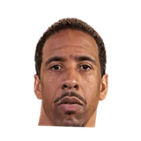

Melissa Rohlin:Gregg Popovich on Andre Miller:
“I wish Andre was 30. He's just a natural. He's a natural leader, just a natural kind of player.”

3 quotes about Andre Miller from 3 players, coaches and executives, newest first. Each one links to its original source.
Melissa Rohlin:Gregg Popovich on Andre Miller:
“I wish Andre was 30. He's just a natural. He's a natural leader, just a natural kind of player.”
Jody Genessy:Brian Shaw on Andre Miller:
“I’m willing to coach any and everybody who wants to put the team first. I have nothing but respect for him.”
“I'd probably say Andre Miller. From the standpoint of efficient minutes, Andre's given us as efficient minutes as anybody. But I think Ty (Lawson) and (Andre Iguodala) and (Danilo Gallinari) all have had moments. And I'm excited, because I think they all are getting stronger and more confident, and their consistency is getting at a higher level. But because of their up-and-down moments, it's going to be difficult for them to get any recognition.”